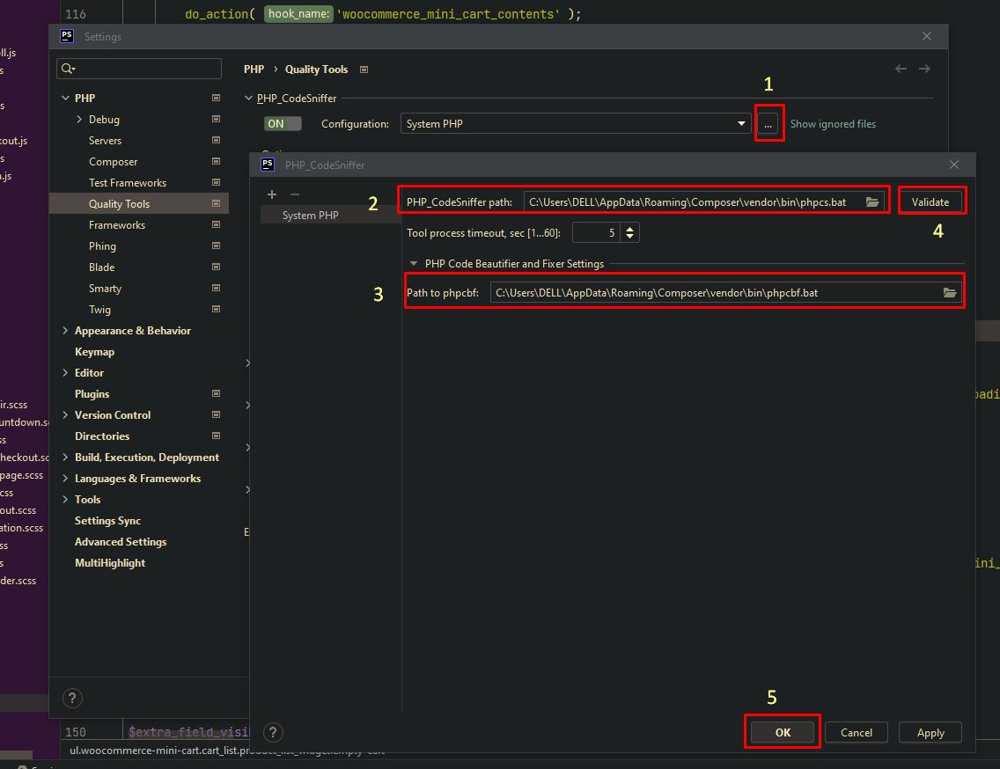
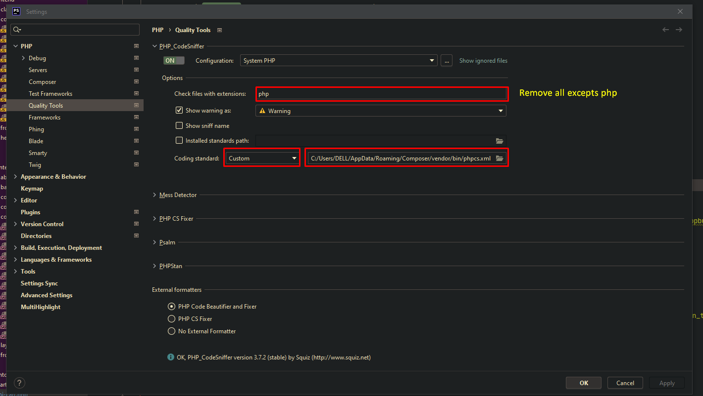

How to install and configure phpcs for wordpress in the phpstrom.
==================================================================


1. composer global require "squizlabs/php_codesniffer=*"
2. composer global config allow-plugins.dealerdirect/phpcodesniffer-composer-installer true
3. composer global require --dev wp-coding-standards/wpcs:"^3.0"

Screenshot-1:


Screenshot-2:



Extra: should move ./phpcs.xml to C:\Users\DELL\AppData\Roaming\Composer\vendor\bin


For old version dependency: No need for new system
++++++++++++++++++++++++++++++++++++++++++++++++++++++
composer global config allow-plugins.dealerdirect/phpcodesniffer-composer-installer true
composer global require --dev phpcsstandards/phpcsextra:"^1.1.0"